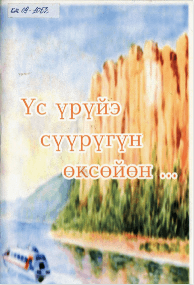

Offline Website Builder- эвенкийский поэт, писатель, художник, прозаик и фольклорист
(1929 - 1983)
Былыттардыы
Тунааран сүппүт
Сүдү, үгүс үйэлэри
Туут хайыһарынан
Курдат сиэлэн кэлбит
Эрдээх-ньургун мохсоҕол,
Оо, эбэҥким удьуора!.....
Түптэлэс гымныыга
Тииккэ өйөнөн,
Титирээн хоноот,
Тииҥи бултаһан
Булбут түүлээҕиҥ
Ынырыктаах ыраахтааҕы
Ымсыы атыыһыттарыгар
Ыттыы былдьанара!..
Тоҥ тордоххор
Тулаайах оҕолоруҥ
Эстэргэ ананан
Экмэнэ ытыыллара...
Кырачаан уҥуохтарын
Кытыан, талах быыһыгар
Кыыл үллэстэрэ...
Эрдээх-ньургун мохсоҕол
Оо, эбэҥким удьуора!..
Сипсиэр тыаллаах сэтинньи
Сир сиксигин хамсатан,
Абарбыт-сатарбыт норуоттар
Адаар ыстыык баалынан
Акыйаан курдук айманаи,
Киһи-аймах этин-хаанын
Эмсэхтэнэ уулаабыт
Икки бастаах өксөкү
Эмэҕирэн суулбута.
Ильич ытык ыйааҕа
Иринньэх, тулаанах норуоппар
Киирбэт күннээх сырдык олох
Чочуонай чороонун туттарбыта.
Онтон ыла аар-тайҕам
Улуу тутуу ырыатын
Унаарыта туойбута.
Эстэн эрэр удьуорум
Кэнчээри ыччата,
Кэлэр кэскил аанын аһан,
Коммунизмы тутуһа,
Сүүһүнэн омуктардыын
Сүрэҕэ бииргэ тэптэ...
Онтон үөрэн, долгуйан.
Сир үөскүөҕүттэн аан бастаан
Тыллан эрэр сарыал курдук,
Тырым гына мичээрдээтин,
Оо, эбэҥким удьуора!..
Чэмэл-ыраас сарсыарда,
Үрдүк билии күүрээнин
Кынатыныы аалай былаах
Кыыһар өҥүн аннынан
Албан аартык арыйсан,
Атын ааттаах омуктардыын
Аччыгый мин норуотум
Айаннастар айаннаһар......
Космос буурҕатыгар
Куударата бураллаҥныы
Уоттаах күнүм улаҕатыгар
Киһи өлбөт эмин ирдии,
Кыһыгырас буулдьаны куотар
Ракета хайыһарданан,
Сулустартан сулустарга
Субуруҥнуу-чугуулуу,
Үгүс үөмэх үйэлэргэ
Сэргэх сээдьэҥ иһиллиэҕэ,
Эрдээх-ньургун мохсоҕол
Оо, эбэҥким удьуора!..
Дмитрий Нестерович родился 10 марта 1929 года в Кюпском наслеге Усть-Майского улуса. Дмитрий после долгих лет тяжелого труда колхозника, шахтера, накопив денег, в 1951 году поступил учиться в Музыкально-художественное училище — на отделение живописи. Там он активно участвовал в работе литературного кружка, которым руководил преподаватель Семен Данилов, позднее — народный поэт Якутии. В это же время встретил свою любовь — Екатерину, с которой начал свою трудовую жизнь в Верхневилюйске (село Мэйик), где о нем тепло вспоминают, т.к. его руками был обновлен памятник семнадцати комсомольцам, погибшим в гражданскую войну. Дмитрий Апросимов работал учителем рисования и черчения, заведующим сельской библиотекой, клубом в Верхневилюйском, потом Усть-Майском районах.
Первые его стихи печатались в районной газете Верхневилюйска, там он познакомился с такими писателями, как Семен Руфов, Петр Тобуроков, Николай Габышев, Василий Гольдеров, с которыми его связывала крепкая дружба до конца жизни. Так с 1957 года началась его профессиональная деятельность как поэта. Им было издано несколько сборников стихов и прозы на якутском языке, книга стихов в московском издательстве «Современник».
Первые сборники его стихотворений вышли в 1968 г. - «Родник», в 1978 г. - «Три ручейка», в 1981 г. - «Три родника». Затем писатель пробовал свои силы и в прозе, им написаны повести «Куралай кустук» (1983), «Кюндэли Куо» (1985)
Дмитрий Нестерович был удивительным человеком, его красили доброта и чуткость, трудолюбие, упорство и сила воли, нежность и любовь к природе и к окружающим его людям.
Умер Дмитрий Апросимов 29 января 1983 года.
Дмитрий Нестерович Апросимов прожил короткую, но яркую жизнь, оставил след как художник и поэт, подарив нам свое творчество.
В декабре 1995 года в Кюпцах , где родился писатель, открылся Литературный музей имени Дмитрия Нестеровича Апросимова
Дмитрий Апросимов - эвенкийский поэт, пишущий на якутском языке. Стихи его рассказывают о родном народе, о людях Якутии, сельских тружениках и охотниках, о любви и природе, уходя корнями в народное творчество, питаясь его мотивами и образами. Одно из главных, подкупающих свойств его поэзии - проникновенный лиризм и открытость
В сборник известного эвенкийского поэта, прозаика, фольклориста Дмитрия Апросимова вошли почти все лучшие его произведения, переведенные в разные годы и опубликованные в газетах и журналах. В своих стихах и легендах талантливый поэт любовно воспевает красоту родной природы, трудолюбивый и гордый народ
В книгу вошли произведения разных жанров талантливого эвенкийского поэта, писателя Апросимова Дмитрия П е тро в и ч а , прожиашего короткую но яркую творческую жизнь (10.03.1929 — 29.01,1983).
Апросимов, Дмитрий Нестерович .
Сүүрээн : [хоһооннор] / Дмитрий Апросимов. - Якутскай : Саха сиринээҕи кинигэ изд-вота, 1 968.- 21, [4] с.
В вып. дан. загл.: Родник : стихи.
Герой легенды борется за справедливую жизнь на земле, за помощью отправляется к солнцу, преодолевая многочисленные препятствия. Солнце выступает в легенде покровителем угнетенных и униженных, с его помощью устанавливается благополучие и счастье людей
Легенда-сказка о любви бедняка к дочери Солнца, о самопожертвовании сильного духом человека ради счастья людей. В произведении умело сочетаются эвенкийские и якутские фольклорные мотивы
В книгу эвенкийского поэта вошли стихи о красоте природы севера, о его трудолюбивом народе
В новую, интересную книгу талантливого эвенкийского поэта Дмитрия Апросимова вошли увлекательная приключенческая повесть, также очерк о тяжелой, но в то же время счастливой судьбе одного из представителей малочисленных народов Севера, прапрадедушка которого является политссыльным, и воспоминания и письма друзей поэта
Айылҕа кэрэтин хоһуйар
Соҕотох оҕотун сүтэрэн,
Аҕыйах киһилээх омугун
Сүһүөҕүн бокутан санньыйар...
Эн эдэр элэккэй дьүһүҥҥүн,
Бэскилээх куудара баттаххын,
Санааны көтөҕөр сэһэҥҥин,
Сааһылаан ыпсарар хоһооҥнун —
Биһиги, эбэҥки дьонноро,
Биһирии көрөрбүт-истэрбит,
Эйигин уһуннук олордор,
Элбэҕи суруйдар дэһэрбит...
Н.Игнатьев
Offline Website Builder